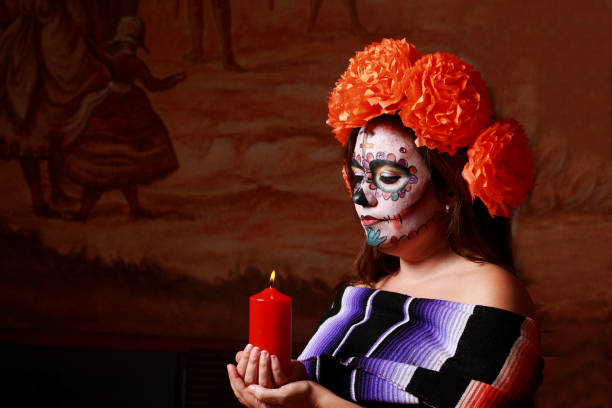
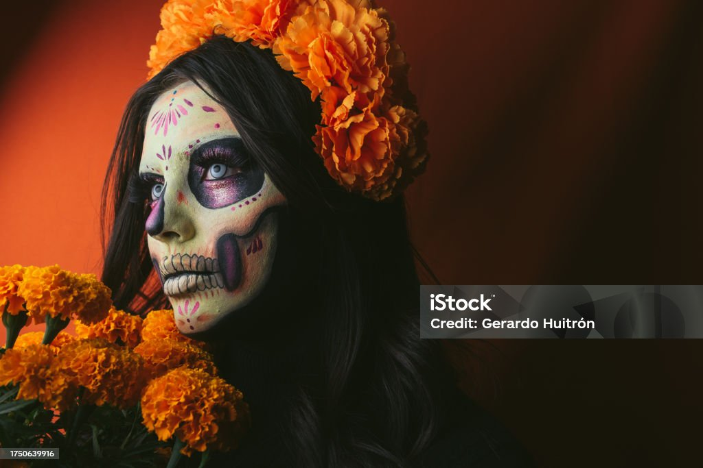
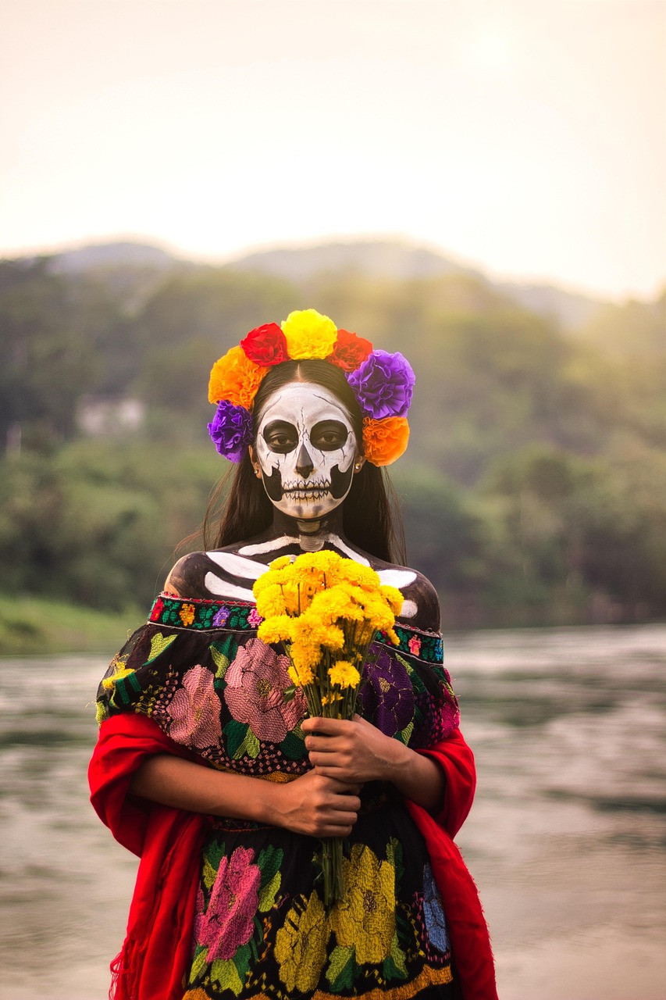
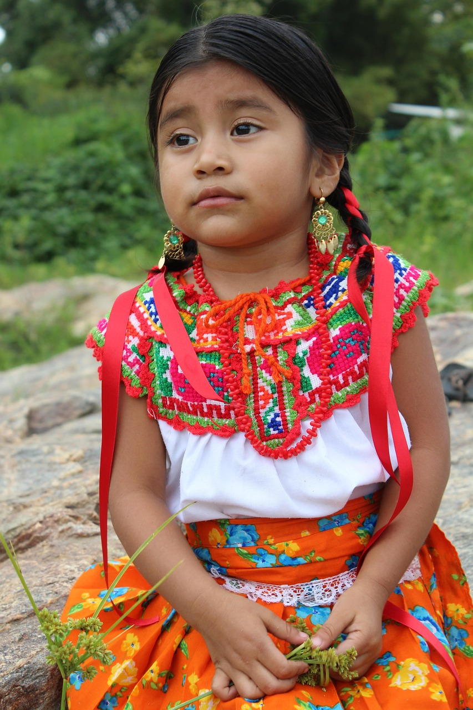
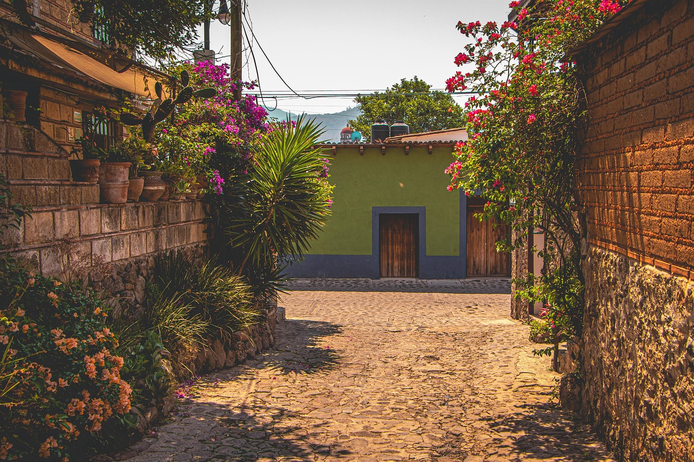
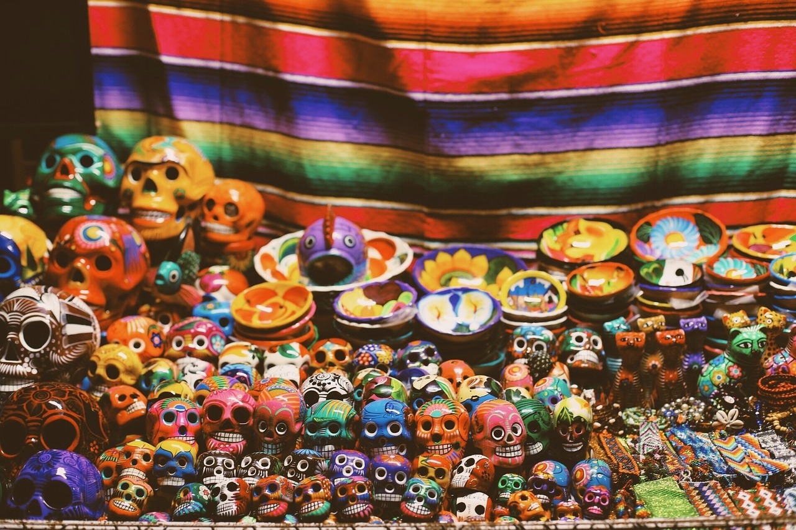
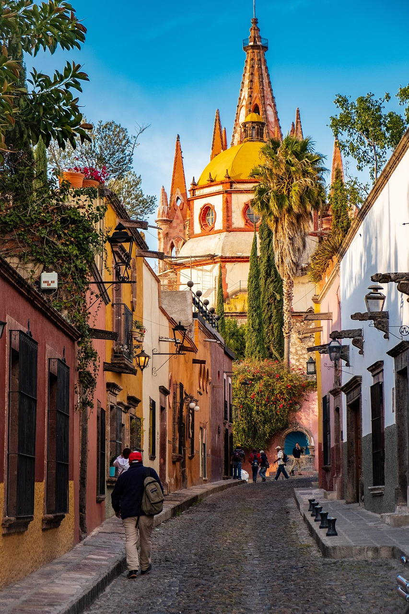

For my designs, I took inspiration from Mexico City and the colorful culture that Mexican culture is. Staying true to some traditional off-shoulder silhouettes, but in a more modern way. To keep that Mexican vibe, I incorporated embroidery along all four garments but made it more simple for a cleaner look, as well as adding small details like monarch butterflies and marigold flowers that hold a big cultural significance.






